x = scale(iris[,1:4])
y = iris[,5]
plot(x[-100,1], x[-100, 3], col = y)
points(x[100,1], x[100, 3], col = "blue", pch = 18, cex = 1.3)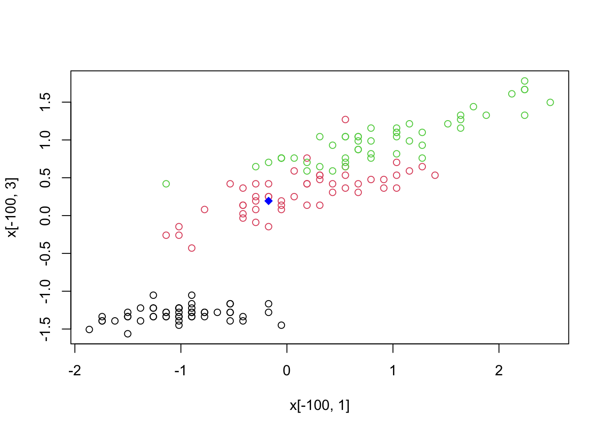
In this chapter, we introduce support-vector machines (SVM) and other distance-based methods Hint: Distance-based models need scaling!
K-nearest-neighbor (kNN) is a simple algorithm that stores all the available cases and classifies the new data based on a similarity measure. It is mostly used to classify a data point based on how its \(k\) nearest neighbors are classified.
Let us first see an example:
x = scale(iris[,1:4])
y = iris[,5]
plot(x[-100,1], x[-100, 3], col = y)
points(x[100,1], x[100, 3], col = "blue", pch = 18, cex = 1.3)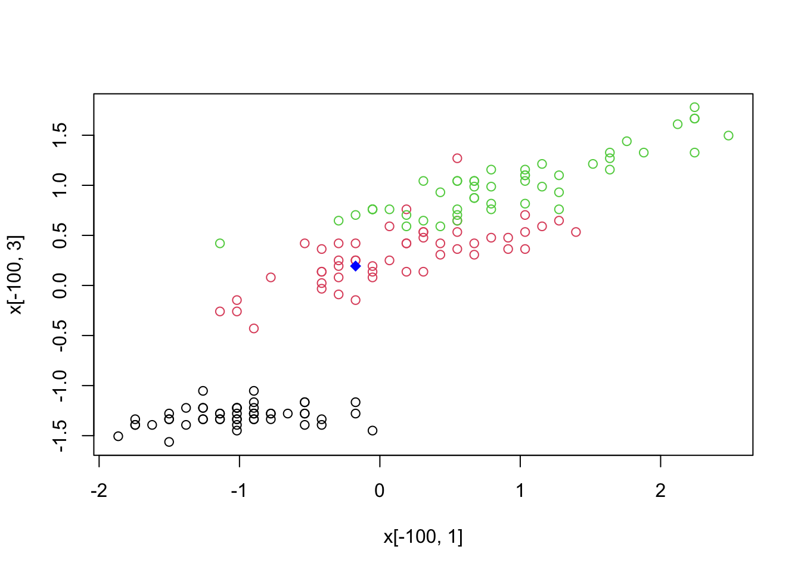
Which class would you decide for the blue point? What are the classes of the nearest points? Well, this procedure is used by the k-nearest-neighbors classifier and thus there is actually no “real” learning in a k-nearest-neighbors classification.
For applying a k-nearest-neighbors classification, we first have to scale the data set, because we deal with distances and want the same influence of all predictors. Imagine one variable has values from -10.000 to 10.000 and another from -1 to 1. Then the influence of the first variable on the distance to the other points is much stronger than the influence of the second variable. On the iris data set, we have to split the data into training and test set on our own. Then we will follow the usual pipeline.
data = iris
data[,1:4] = apply(data[,1:4],2, scale)
indices = sample.int(nrow(data), 0.7*nrow(data))
train = data[indices,]
test = data[-indices,]Fit model and create predictions:
library(kknn)
set.seed(123)
knn = kknn(Species~., train = train, test = test)Warning in model.matrix.default(mt2, test, contrasts.arg = contrasts.arg):
variable 'Species' is absent, its contrast will be ignoredsummary(knn)
Call:
kknn(formula = Species ~ ., train = train, test = test)
Response: "nominal"
fit prob.setosa prob.versicolor prob.virginica
1 setosa 1.0000000 0.0000000 0.0000000
2 setosa 1.0000000 0.0000000 0.0000000
3 setosa 1.0000000 0.0000000 0.0000000
4 setosa 1.0000000 0.0000000 0.0000000
5 setosa 1.0000000 0.0000000 0.0000000
6 setosa 1.0000000 0.0000000 0.0000000
7 setosa 1.0000000 0.0000000 0.0000000
8 setosa 1.0000000 0.0000000 0.0000000
9 setosa 1.0000000 0.0000000 0.0000000
10 setosa 1.0000000 0.0000000 0.0000000
11 setosa 1.0000000 0.0000000 0.0000000
12 setosa 1.0000000 0.0000000 0.0000000
13 versicolor 0.3994841 0.6005159 0.0000000
14 setosa 1.0000000 0.0000000 0.0000000
15 setosa 1.0000000 0.0000000 0.0000000
16 versicolor 0.0000000 0.8991814 0.1008186
17 versicolor 0.0000000 0.9148730 0.0851270
18 versicolor 0.0000000 0.8991814 0.1008186
19 versicolor 0.0000000 1.0000000 0.0000000
20 versicolor 0.0000000 1.0000000 0.0000000
21 versicolor 0.0000000 1.0000000 0.0000000
22 versicolor 0.0000000 1.0000000 0.0000000
23 versicolor 0.0000000 1.0000000 0.0000000
24 versicolor 0.0000000 1.0000000 0.0000000
25 versicolor 0.0000000 1.0000000 0.0000000
26 versicolor 0.0000000 1.0000000 0.0000000
27 virginica 0.0000000 0.2468115 0.7531885
28 virginica 0.0000000 0.0000000 1.0000000
29 virginica 0.0000000 0.0000000 1.0000000
30 virginica 0.0000000 0.0156916 0.9843084
31 virginica 0.0000000 0.1008186 0.8991814
32 virginica 0.0000000 0.2216956 0.7783044
33 virginica 0.0000000 0.4420312 0.5579688
34 virginica 0.0000000 0.0000000 1.0000000
35 virginica 0.0000000 0.0000000 1.0000000
36 virginica 0.0000000 0.0000000 1.0000000
37 versicolor 0.0000000 0.7419919 0.2580081
38 virginica 0.0000000 0.0000000 1.0000000
39 versicolor 0.0000000 0.5379425 0.4620575
40 virginica 0.0000000 0.0000000 1.0000000
41 virginica 0.0000000 0.2468115 0.7531885
42 virginica 0.0000000 0.0000000 1.0000000
43 virginica 0.0000000 0.0000000 1.0000000
44 virginica 0.0000000 0.0851270 0.9148730
45 virginica 0.0000000 0.4528155 0.5471845table(test$Species, fitted(knn))
setosa versicolor virginica
setosa 14 1 0
versicolor 0 11 0
virginica 0 2 17| Hyperparameter | Explanation |
|---|---|
| kernel | Kernel that should be used. Kernel is used to bring the features into a feature space where the problem/task is easier to solve |
| k | Number of neighbors used to calculate the response |
Support vectors machines have a different approach. They try to divide the predictor space into sectors for each class. To do so, a support-vector machine fits the parameters of a hyperplane (a \(n-1\) dimensional subspace in a \(n\)-dimensional space) in the predictor space by optimizing the distance between the hyperplane and the nearest point from each class.
Fitting a support-vector machine:
library(e1071)
data = iris
data[,1:4] = apply(data[,1:4], 2, scale)
indices = sample.int(nrow(data), 0.7*nrow(data))
train = data[indices,]
test = data[-indices,]
sm = svm(Species~., data = train, kernel = "linear")
pred = predict(sm, newdata = test)oldpar = par(mfrow = c(1, 2))
plot(test$Sepal.Length, test$Petal.Length,
col = pred, main = "predicted")
plot(test$Sepal.Length, test$Petal.Length,
col = test$Species, main = "observed")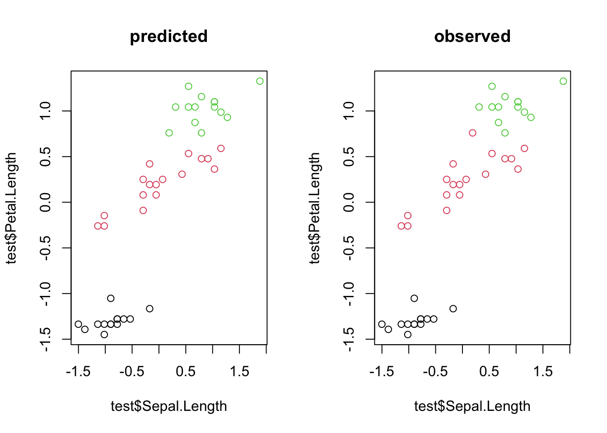
par(oldpar)
mean(pred == test$Species) # Accuracy.[1] 0.9777778Support-vector machines can only work on linearly separable problems. (A problem is called linearly separable if there exists at least one line in the plane with all of the points of one class on one side of the hyperplane and all the points of the others classes on the other side).
If this is not possible, we however, can use the so called kernel trick, which maps the predictor space into a (higher dimensional) space in which the problem is linear separable. After having identified the boundaries in the higher-dimensional space, we can project them back into the original dimensions.
x1 = seq(-3, 3, length.out = 100)
x2 = seq(-3, 3, length.out = 100)
X = expand.grid(x1, x2)
y = apply(X, 1, function(t) exp(-t[1]^2 - t[2]^2))
y = ifelse(1/(1+exp(-y)) < 0.62, 0, 1)
image(matrix(y, 100, 100))
animation::saveGIF(
{
for(i in c("truth", "linear", "radial", "sigmoid")){
if(i == "truth"){
image(matrix(y, 100,100),
main = "Ground truth", axes = FALSE, las = 2)
}else{
sv = e1071::svm(x = X, y = factor(y), kernel = i)
image(matrix(as.numeric(as.character(predict(sv, X))), 100, 100),
main = paste0("Kernel: ", i), axes = FALSE, las = 2)
axis(1, at = seq(0,1, length.out = 10),
labels = round(seq(-3, 3, length.out = 10), 1))
axis(2, at = seq(0,1, length.out = 10),
labels = round(seq(-3, 3, length.out = 10), 1), las = 2)
}
}
},
movie.name = "svm.gif", autobrowse = FALSE, interval = 2
)
As you have seen, this does not work with every kernel. Hence, the problem is to find the actual correct kernel, which is again an optimization procedure and can thus be approximated.
| Hyperparameter | Explanation |
|---|---|
| kernel | Kernel that should be used. Kernel is used to bring the features into a feature space where the problem/task is easier to solve / linear separable |
| cost | regularization term |
In unsupervised learning, we want to identify patterns in data without having any examples (supervision) about what the correct patterns / classes are. As an example, consider the iris data set. Here, we have 150 observations of 4 floral traits:
iris = datasets::iris
colors = hcl.colors(3)
traits = as.matrix(iris[,1:4])
species = iris$Species
image(y = 1:4, x = 1:length(species) , z = traits,
ylab = "Floral trait", xlab = "Individual")
segments(50.5, 0, 50.5, 5, col = "black", lwd = 2)
segments(100.5, 0, 100.5, 5, col = "black", lwd = 2)
The observations are from 3 species and indeed those species tend to have different traits, meaning that the observations form 3 clusters.
pairs(traits, pch = as.integer(species), col = colors[as.integer(species)])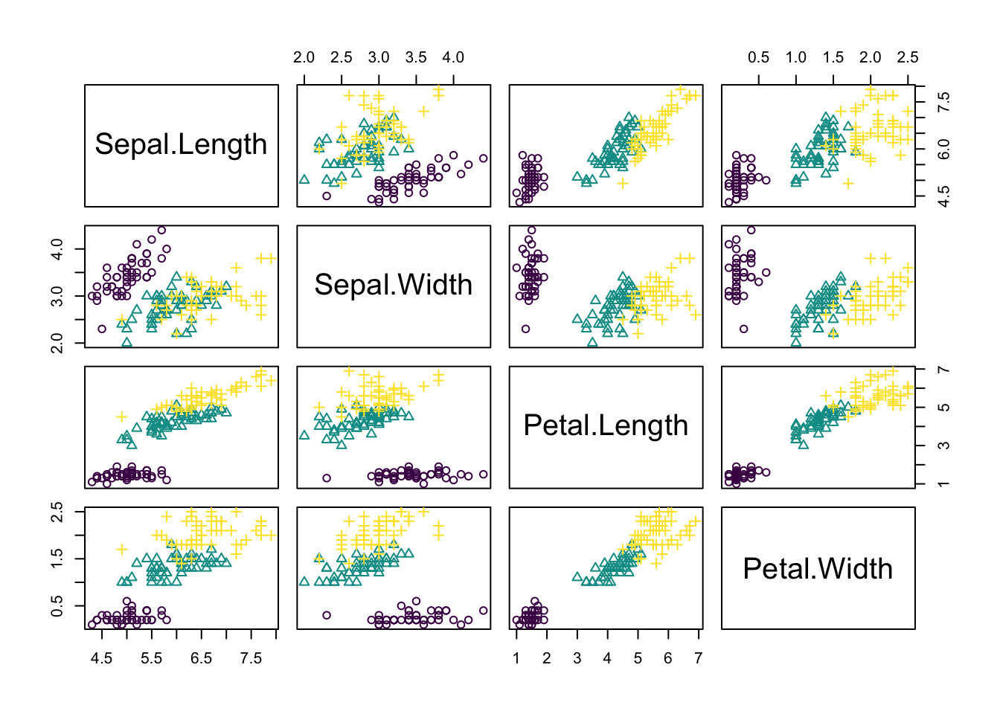
However, imagine we don’t know what species are, what is basically the situation in which people in the antique have been. The people just noted that some plants have different flowers than others, and decided to give them different names. This kind of process is what unsupervised learning does.
A cluster refers to a collection of data points aggregated together because of certain similarities.
In hierarchical clustering, a hierarchy (tree) between data points is built.
Merges / splits are done according to linkage criterion, which measures distance between (potential) clusters. Cut the tree at a certain height to get clusters.
Here an example
set.seed(123)
#Reminder: traits = as.matrix(iris[,1:4]).
d = dist(traits)
hc = hclust(d, method = "complete")
plot(hc, main="")
rect.hclust(hc, k = 3) # Draw rectangles around the branches.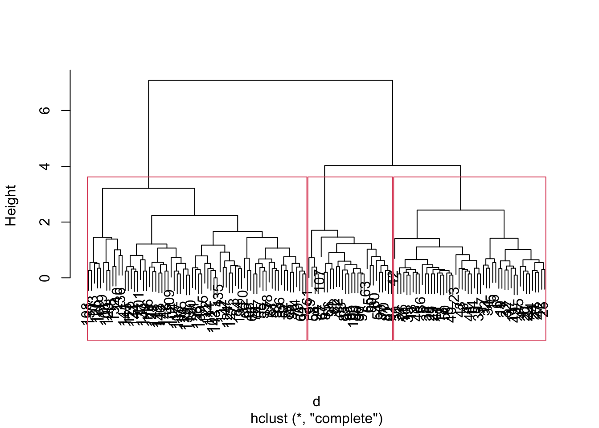
Same plot, but with colors for true species identity
library(ape)
plot(as.phylo(hc),
tip.color = colors[as.integer(species)],
direction = "downwards")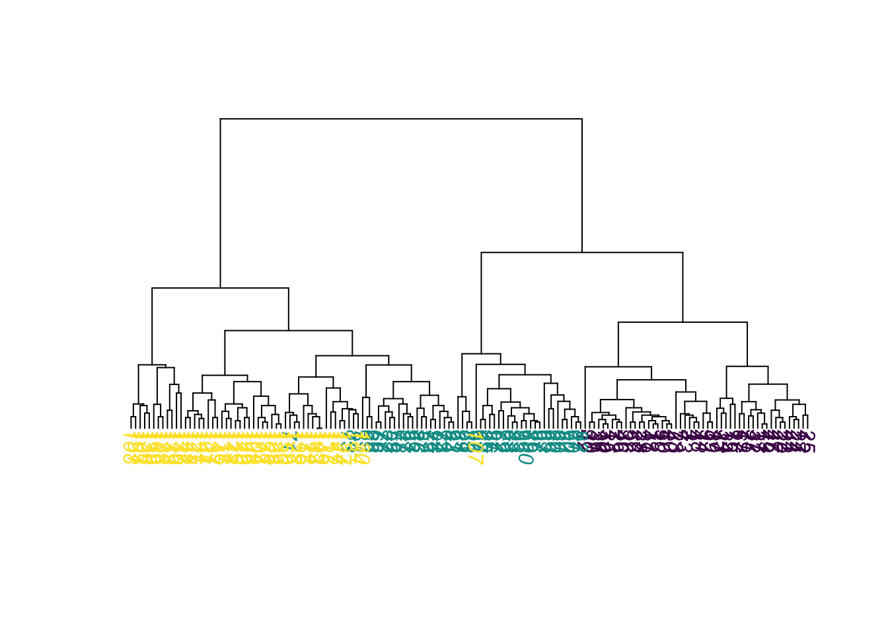
hcRes3 = cutree(hc, k = 3) #Cut a dendrogram tree into groups.Calculate confusion matrix. Note we are switching labels here so that it fits to the species.
tmp = hcRes3
tmp[hcRes3 == 2] = 3
tmp[hcRes3 == 3] = 2
hcRes3 = tmp
table(hcRes3, species)| setosa | versicolor | virginica |
|---|---|---|
| 50 | 0 | 0 |
| 0 | 27 | 1 |
| 0 | 23 | 49 |
Note that results might change if you choose a different agglomeration method, distance metric or scale of your variables. Compare, e.g. to this example:
hc = hclust(d, method = "ward.D2")
plot(as.phylo(hc),
tip.color = colors[as.integer(species)],
direction = "downwards")
hcRes3 = cutree(hc, k = 3) #Cut a dendrogram tree into groups.
table(hcRes3, species)| setosa | versicolor | virginica |
|---|---|---|
| 50 | 0 | 0 |
| 0 | 49 | 15 |
| 0 | 1 | 35 |
Which method is best?
library(dendextend)set.seed(123)
methods = c("ward.D", "single", "complete", "average",
"mcquitty", "median", "centroid", "ward.D2")
out = dendlist() # Create a dendlist object from several dendrograms.
for(method in methods){
res = hclust(d, method = method)
out = dendlist(out, as.dendrogram(res))
}
names(out) = methods
print(out)$ward.D
'dendrogram' with 2 branches and 150 members total, at height 199.6205
$single
'dendrogram' with 2 branches and 150 members total, at height 1.640122
$complete
'dendrogram' with 2 branches and 150 members total, at height 7.085196
$average
'dendrogram' with 2 branches and 150 members total, at height 4.062683
$mcquitty
'dendrogram' with 2 branches and 150 members total, at height 4.497283
$median
'dendrogram' with 2 branches and 150 members total, at height 2.82744
$centroid
'dendrogram' with 2 branches and 150 members total, at height 2.994307
$ward.D2
'dendrogram' with 2 branches and 150 members total, at height 32.44761
attr(,"class")
[1] "dendlist"get_ordered_3_clusters = function(dend){
# order.dendrogram function returns the order (index)
# or the "label" attribute for the leaves.
# cutree: Cut the tree (dendrogram) into groups of data.
cutree(dend, k = 3)[order.dendrogram(dend)]
}
dend_3_clusters = lapply(out, get_ordered_3_clusters)
# Calculate Fowlkes-Mallows Index (determine the similarity between clusterings)
compare_clusters_to_iris = function(clus){
FM_index(clus, rep(1:3, each = 50), assume_sorted_vectors = TRUE)
}
clusters_performance = sapply(dend_3_clusters, compare_clusters_to_iris)
dotchart(sort(clusters_performance), xlim = c(0.3, 1),
xlab = "Fowlkes-Mallows index",
main = "Performance of linkage methods
in detecting the 3 species \n in our example",
pch = 19)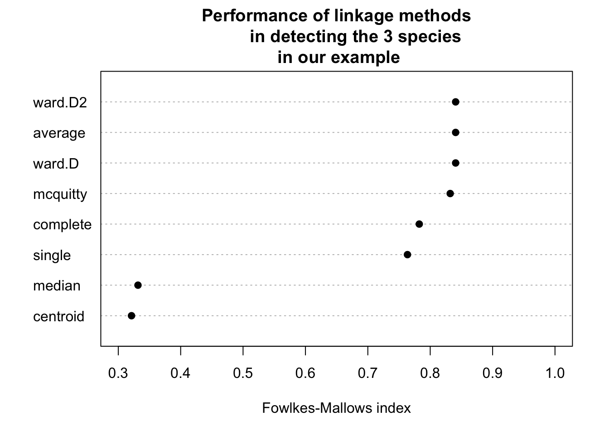
We might conclude that ward.D2 works best here. However, as we will learn later, optimizing the method without a hold-out for testing implies that our model may be overfitting. We should check this using cross-validation.
Another example for an unsupervised learning algorithm is k-means clustering, one of the simplest and most popular unsupervised machine learning algorithms.
To start with the algorithm, you first have to specify the number of clusters (for our example the number of species). Each cluster has a centroid, which is the assumed or real location representing the center of the cluster (for our example this would be how an average plant of a specific species would look like). The algorithm starts by randomly putting centroids somewhere. Afterwards each data point is assigned to the respective cluster that raises the overall in-cluster sum of squares (variance) related to the distance to the centroid least of all. After the algorithm has placed all data points into a cluster the centroids get updated. By iterating this procedure until the assignment doesn’t change any longer, the algorithm can find the (locally) optimal centroids and the data points belonging to this cluster. Note that results might differ according to the initial positions of the centroids. Thus several (locally) optimal solutions might be found.
The “k” in K-means refers to the number of clusters and the ‘means’ refers to averaging the data-points to find the centroids.
A typical pipeline for using k-means clustering looks the same as for other algorithms. After having visualized the data, we fit a model, visualize the results and have a look at the performance by use of the confusion matrix. By setting a fixed seed, we can ensure that results are reproducible.
set.seed(123)
#Reminder: traits = as.matrix(iris[,1:4]).
kc = kmeans(traits, 3)
print(kc)K-means clustering with 3 clusters of sizes 50, 62, 38
Cluster means:
Sepal.Length Sepal.Width Petal.Length Petal.Width
1 5.006000 3.428000 1.462000 0.246000
2 5.901613 2.748387 4.393548 1.433871
3 6.850000 3.073684 5.742105 2.071053
Clustering vector:
[1] 1 1 1 1 1 1 1 1 1 1 1 1 1 1 1 1 1 1 1 1 1 1 1 1 1 1 1 1 1 1 1 1 1 1 1 1 1
[38] 1 1 1 1 1 1 1 1 1 1 1 1 1 2 2 3 2 2 2 2 2 2 2 2 2 2 2 2 2 2 2 2 2 2 2 2 2
[75] 2 2 2 3 2 2 2 2 2 2 2 2 2 2 2 2 2 2 2 2 2 2 2 2 2 2 3 2 3 3 3 3 2 3 3 3 3
[112] 3 3 2 2 3 3 3 3 2 3 2 3 2 3 3 2 2 3 3 3 3 3 2 3 3 3 3 2 3 3 3 2 3 3 3 2 3
[149] 3 2
Within cluster sum of squares by cluster:
[1] 15.15100 39.82097 23.87947
(between_SS / total_SS = 88.4 %)
Available components:
[1] "cluster" "centers" "totss" "withinss" "tot.withinss"
[6] "betweenss" "size" "iter" "ifault" Visualizing the results. Color codes true species identity, symbol shows cluster result.
plot(iris[c("Sepal.Length", "Sepal.Width")],
col = colors[as.integer(species)], pch = kc$cluster)
points(kc$centers[, c("Sepal.Length", "Sepal.Width")],
col = colors, pch = 1:3, cex = 3)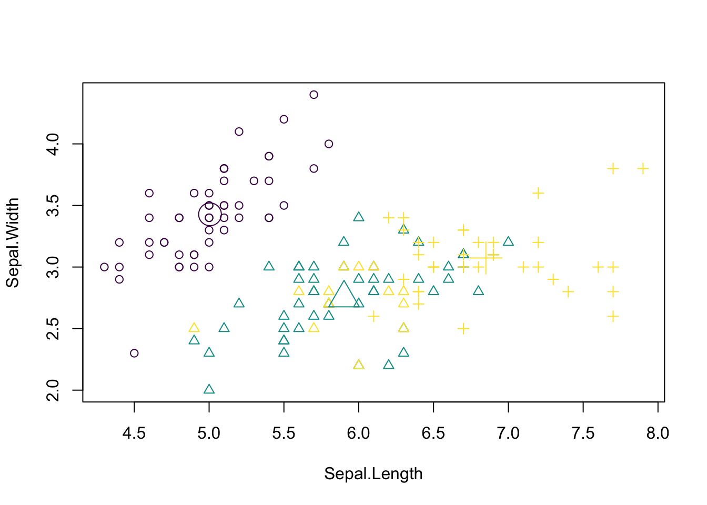
We see that there are are some discrepancies. Confusion matrix:
table(iris$Species, kc$cluster)
1 2 3
setosa 50 0 0
versicolor 0 48 2
virginica 0 14 36If you want to animate the clustering process, you could run
library(animation)
saveGIF(kmeans.ani(x = traits[,1:2], col = colors),
interval = 1, ani.width = 800, ani.height = 800)Elbow technique to determine the probably best suited number of clusters:
set.seed(123)
getSumSq = function(k){ kmeans(traits, k, nstart = 25)$tot.withinss }
#Perform algorithm for different cluster sizes and retrieve variance.
iris.kmeans1to10 = sapply(1:10, getSumSq)
plot(1:10, iris.kmeans1to10, type = "b", pch = 19, frame = FALSE,
xlab = "Number of clusters K",
ylab = "Total within-clusters sum of squares",
col = c("black", "red", rep("black", 8)))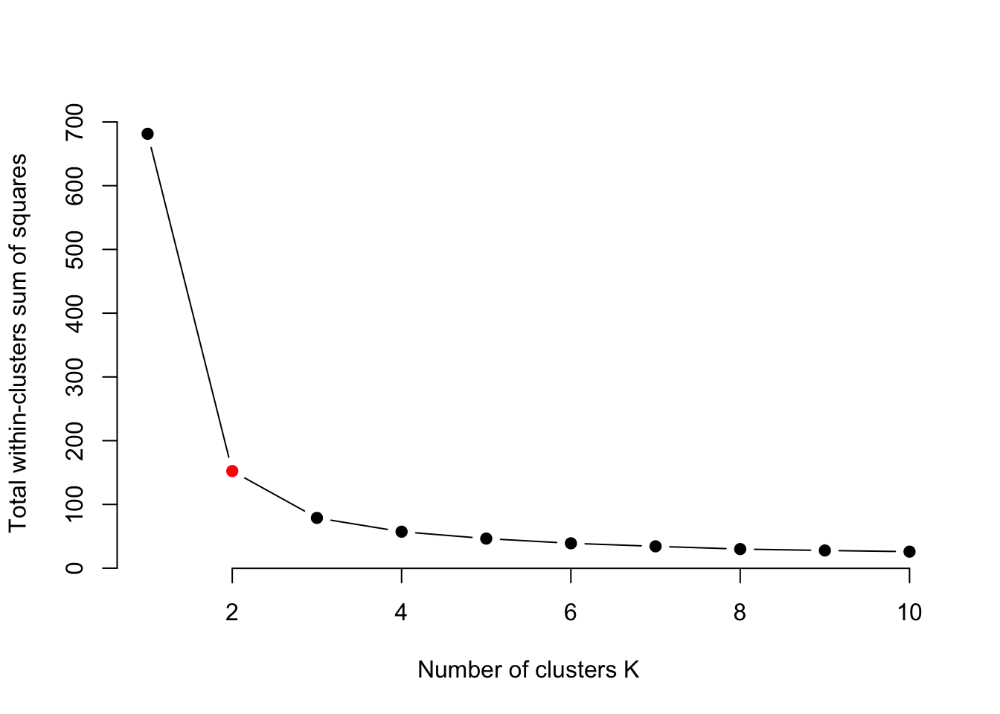
Often, one is interested in sparse models. Furthermore, higher k than necessary tends to overfitting. At the kink in the picture, the sum of squares dropped enough and k is still low enough. But keep in mind, this is only a rule of thumb and might be wrong in some special cases.
Determine the affinity of a data point according to the affinity of its k nearest neighbors. This is a very general description as there are many ways to do so.
#Reminder: traits = as.matrix(iris[,1:4]).
library(dbscan)
Attaching package: 'dbscan'The following object is masked from 'package:stats':
as.dendrogramset.seed(123)
kNNdistplot(traits, k = 4) # Calculate and plot k-nearest-neighbor distances.
abline(h = 0.4, lty = 2)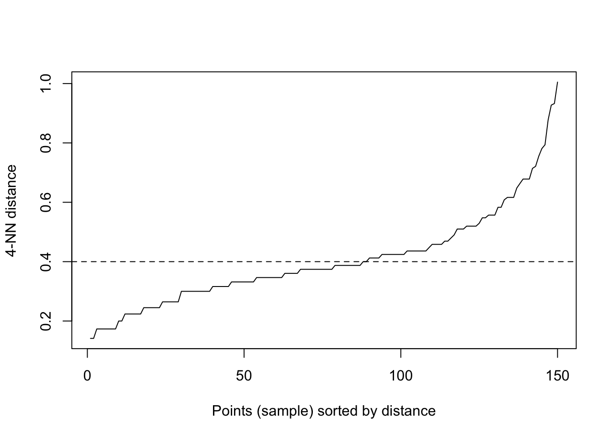
dc = dbscan(traits, eps = 0.4, minPts = 6)
print(dc)DBSCAN clustering for 150 objects.
Parameters: eps = 0.4, minPts = 6
Using euclidean distances and borderpoints = TRUE
The clustering contains 4 cluster(s) and 32 noise points.
0 1 2 3 4
32 46 36 14 22
Available fields: cluster, eps, minPts, metric, borderPointslibrary(factoextra)fviz_cluster(dc, traits, geom = "point", ggtheme = theme_light())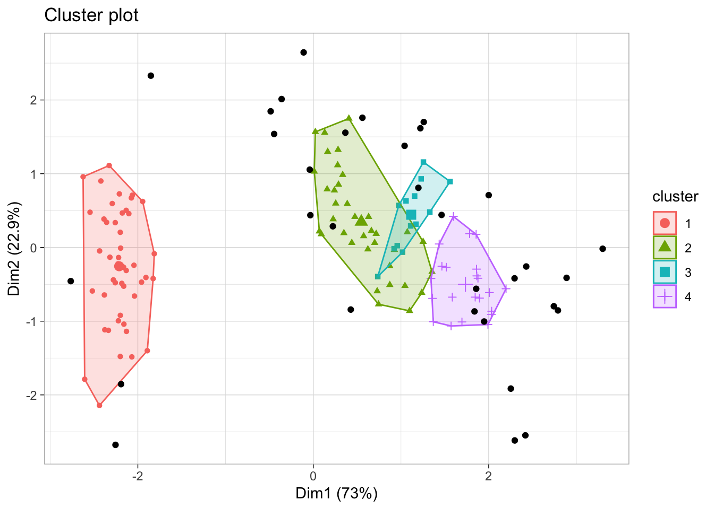
The last class of methods for unsupervised clustering are so-called model-based clustering methods.
library(mclust)Package 'mclust' version 6.1.1
Type 'citation("mclust")' for citing this R package in publications.mb = Mclust(traits)Mclust automatically compares a number of candidate models (clusters, shape) according to BIC (The BIC is a criterion for classifying algorithms depending their prediction quality and their usage of parameters). We can look at the selected model via:
mb$G # Two clusters.[1] 2mb$modelName # > Ellipsoidal, equal shape.[1] "VEV"We see that the algorithm prefers having 2 clusters. For better comparability to the other 2 methods, we will override this by setting:
mb3 = Mclust(traits, 3)Result in terms of the predicted densities for 3 clusters
plot(mb3, "density")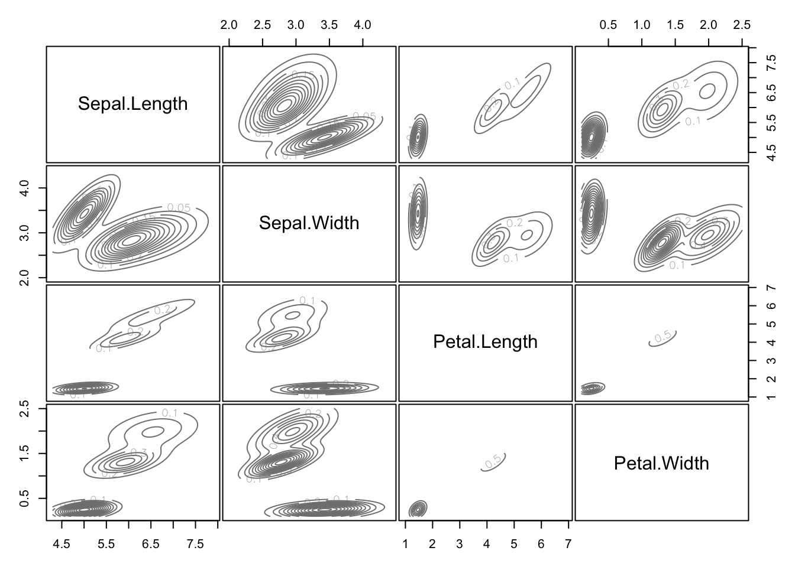
Predicted clusters:
plot(mb3, what=c("classification"), add = T)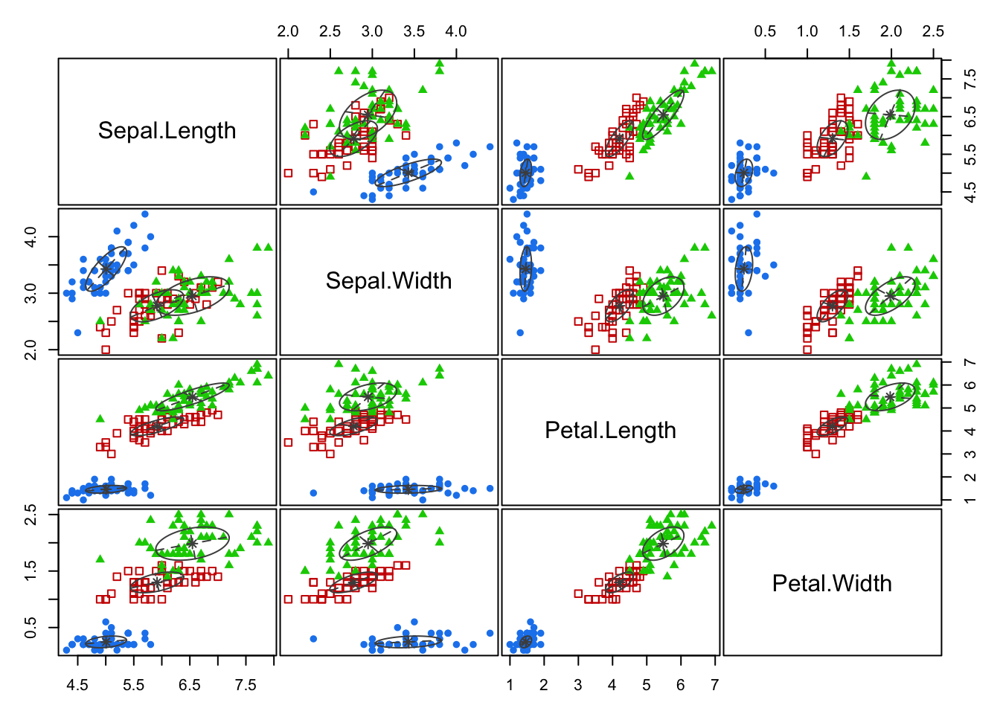
Confusion matrix:
table(iris$Species, mb3$classification)| setosa | versicolor | virginica |
|---|---|---|
| 50 | 0 | 0 |
| 0 | 49 | 15 |
| 0 | 1 | 35 |
Ordination is used in explorative analysis and compared to clustering, similar objects are ordered together. So there is a relationship between clustering and ordination. Here a PCA ordination on on the iris data set.
pcTraits = prcomp(traits, center = TRUE, scale. = TRUE)
biplot(pcTraits, xlim = c(-0.25, 0.25), ylim = c(-0.25, 0.25))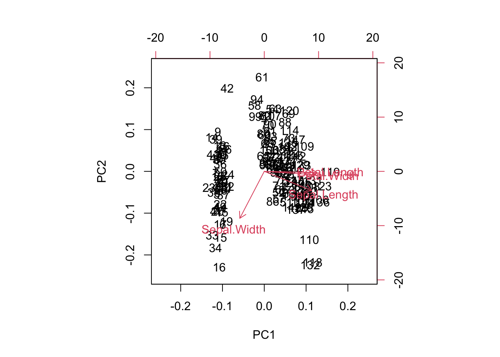
You can cluster the results of this ordination, ordinate before clustering, or superimpose one on the other.
We want to optimize the number of neighbors (k) and the kernel of the kNN:
Prepare the data:
library(EcoData)
library(dplyr)
Attaching package: 'dplyr'The following object is masked from 'package:ape':
whereThe following objects are masked from 'package:stats':
filter, lagThe following objects are masked from 'package:base':
intersect, setdiff, setequal, unionlibrary(missRanger)
data(titanic_ml)
data = titanic_ml
data =
data %>% select(survived, sex, age, fare, pclass)
data[,-1] = missRanger(data[,-1], verbose = 0)
data_sub =
data %>%
mutate(age = scales::rescale(age, c(0, 1)),
fare = scales::rescale(fare, c(0, 1))) %>%
mutate(sex = as.integer(sex) - 1L,
pclass = as.integer(pclass - 1L))
data_new = data_sub[is.na(data_sub$survived),] # for which we want to make predictions at the end
data_obs = data_sub[!is.na(data_sub$survived),] # data with known responseHints:
library(kknn)
set.seed(42)
data_obs = data_sub[!is.na(data_sub$survived),]
data_obs$survived = as.factor(data_obs$survived)
cv = 3
steps = 10
split = sample.int(cv, nrow(data_obs), replace = T)
hyper_k = sample(10, 10)
hyper_kernel = sample(c("triangular", "inv", "gaussian", "rank"), 10, replace = TRUE)
tuning_results =
sapply(1:length(hyper_kernel), function(k) {
auc_inner = NULL
for(j in 1:cv) {
inner_split = split == j
train_inner = data_obs[!inner_split, ]
test_inner = data_obs[inner_split, ]
predictions = kknn(survived~., train = train_inner, test = test_inner, k = hyper_k[k], scale = FALSE, kernel = hyper_kernel[k])
auc_inner[j]= Metrics::auc(test_inner$survived, predictions$prob[,2])
}
return(mean(auc_inner))
})
results = data.frame(k = hyper_k, kernel = hyper_kernel, AUC = tuning_results)
print(results) k kernel AUC
1 3 triangular 0.7766805
2 5 gaussian 0.7940078
3 10 triangular 0.8071778
4 8 rank 0.8010088
5 4 triangular 0.7857645
6 1 rank 0.7164612
7 2 triangular 0.7520952
8 7 inv 0.8020953
9 9 gaussian 0.8076482
10 6 triangular 0.7984275Make predictions:
prediction_ensemble =
sapply(1:nrow(results), function(i) {
predictions = kknn(as.factor(survived)~., train = data_obs, test = data_new, k = results$k[i], scale = FALSE, kernel = results$kernel[i])
return(predictions$prob[,2])
})
# Single predictions from the ensemble model:
write.csv(data.frame(y = apply(prediction_ensemble, 1, mean)), file = "Max_titanic_ensemble.csv")We want to optimize the kernel and the cost parameters
Prepare the data:
library(EcoData)
library(dplyr)
library(missRanger)
data(titanic_ml)
data = titanic_ml
data =
data %>% select(survived, sex, age, fare, pclass)
data[,-1] = missRanger(data[,-1], verbose = 0)
data_sub =
data %>%
mutate(age = scales::rescale(age, c(0, 1)),
fare = scales::rescale(fare, c(0, 1))) %>%
mutate(sex = as.integer(sex) - 1L,
pclass = as.integer(pclass - 1L))
data_new = data_sub[is.na(data_sub$survived),] # for which we want to make predictions at the end
data_obs = data_sub[!is.na(data_sub$survived),] # data with known responseHints:
library(e1071)
set.seed(42)
data_obs = data_sub[!is.na(data_sub$survived),]
data_obs$survived = as.factor(data_obs$survived)
cv = 3
steps = 40
split = sample.int(cv, nrow(data_obs), replace = T)
hyper_cost = runif(10, 0, 2)
hyper_kernel = sample(c("linear", "polynomial", "radial", "sigmoid"), 10, replace = TRUE)
tuning_results =
sapply(1:length(hyper_kernel), function(k) {
auc_inner = NULL
for(j in 1:cv) {
inner_split = split == j
train_inner = data_obs[!inner_split, ]
test_inner = data_obs[inner_split, ]
model = svm(survived~., data = train_inner, cost = hyper_cost[k], kernel = hyper_kernel[k], probability = TRUE)
predictions = attr(predict(model, newdata = test_inner, probability = TRUE), "probabilities")[,1]
auc_inner[j]= Metrics::auc(test_inner$survived, predictions)
}
return(mean(auc_inner))
})
results = data.frame(cost = hyper_cost, kernel = hyper_kernel, AUC = tuning_results)
print(results) cost kernel AUC
1 0.2753503 sigmoid 0.5526128
2 0.5526653 radial 0.6159725
3 0.7036870 linear 0.5865394
4 1.6256105 sigmoid 0.5178411
5 0.3430827 linear 0.5643597
6 1.0423242 radial 0.6035677
7 1.5292457 linear 0.5559287
8 0.5775113 sigmoid 0.5368064
9 0.8735566 linear 0.6131153
10 1.3389015 sigmoid 0.5189292Make predictions:
model = svm(survived~., data = data_obs, cost = results[which.max(results$AUC),1], kernel = results[which.max(results$AUC),2], probability = TRUE)
predictions = attr(predict(model, newdata = data_new[,-1], probability = TRUE), "probabilities")[,1]
# Single predictions from the ensemble model:
write.csv(data.frame(y = apply(prediction_ensemble, 1, mean)), file = "Max_titanic_ensemble.csv")Go through the 4(5) unsupervised algorithms from the supervised chapter Section 2.2, and check
Discuss in your group: Which is more appropriate for this analysis and/or in general: Scaling or not scaling?
library(dendextend)
methods = c("ward.D", "single", "complete", "average",
"mcquitty", "median", "centroid", "ward.D2")
cluster_all_methods = function(distances){
out = dendlist()
for(method in methods){
res = hclust(distances, method = method)
out = dendlist(out, as.dendrogram(res))
}
names(out) = methods
return(out)
}
get_ordered_3_clusters = function(dend){
return(cutree(dend, k = 3)[order.dendrogram(dend)])
}
compare_clusters_to_iris = function(clus){
return(FM_index(clus, rep(1:3, each = 50), assume_sorted_vectors = TRUE))
}
do_clustering = function(traits, scale = FALSE){
set.seed(123)
headline = "Performance of linkage methods\nin detecting the 3 species\n"
if(scale){
traits = scale(traits) # Do scaling on copy of traits.
headline = paste0(headline, "Scaled")
}else{ headline = paste0(headline, "Not scaled") }
distances = dist(traits)
out = cluster_all_methods(distances)
dend_3_clusters = lapply(out, get_ordered_3_clusters)
clusters_performance = sapply(dend_3_clusters, compare_clusters_to_iris)
dotchart(sort(clusters_performance), xlim = c(0.3,1),
xlab = "Fowlkes-Mallows index",
main = headline,
pch = 19)
}
traits = as.matrix(iris[,1:4])
# Do clustering on unscaled data.
do_clustering(traits, FALSE)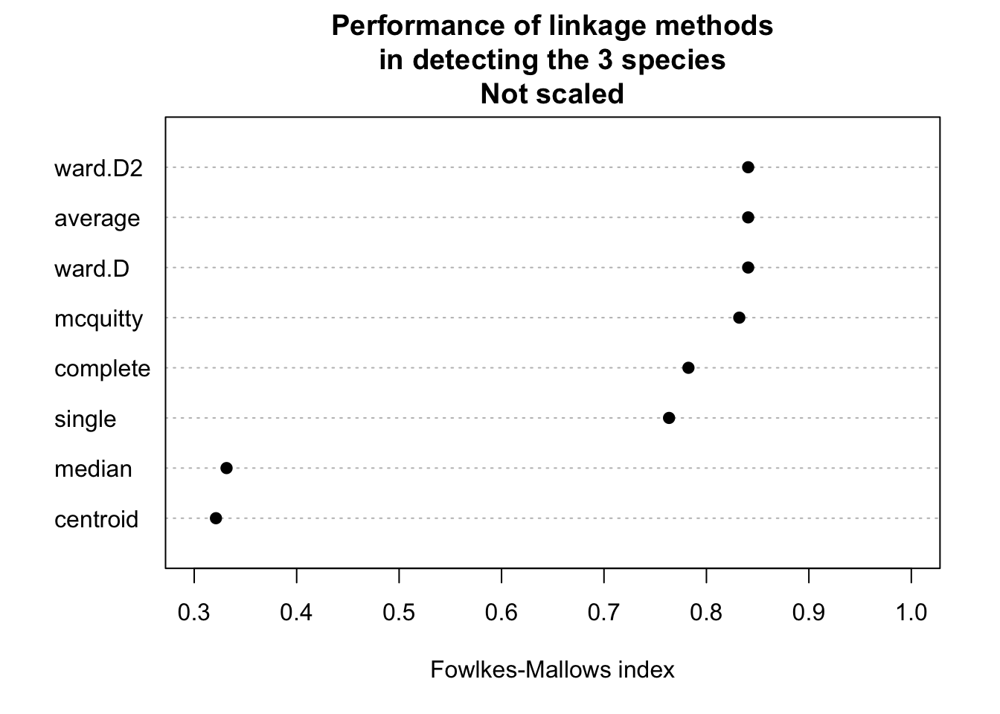
# Do clustering on scaled data.
do_clustering(traits, TRUE)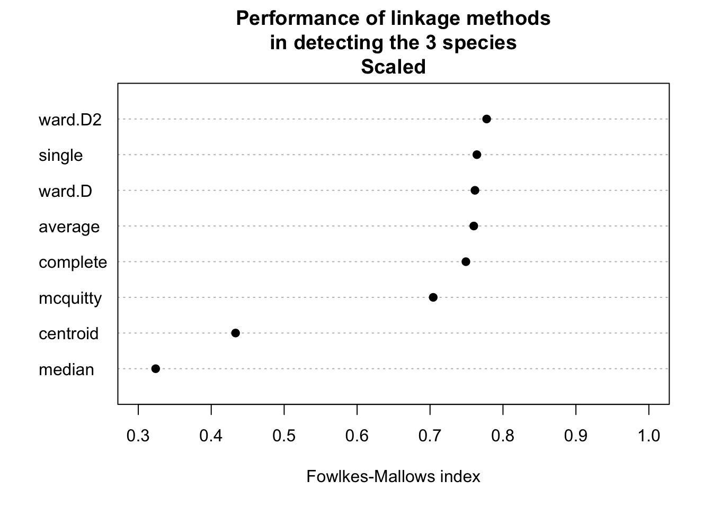
It seems that scaling is harmful for hierarchical clustering. But this might be a deception. Be careful: If you have data on different units or magnitudes, scaling is definitely useful! Otherwise variables with higher values get higher influence.
do_clustering = function(traits, scale = FALSE){
set.seed(123)
if(scale){
traits = scale(traits) # Do scaling on copy of traits.
headline = "K-means Clustering\nScaled\nSum of all tries: "
}else{ headline = "K-means Clustering\nNot scaled\nSum of all tries: " }
getSumSq = function(k){ kmeans(traits, k, nstart = 25)$tot.withinss }
iris.kmeans1to10 = sapply(1:10, getSumSq)
headline = paste0(headline, round(sum(iris.kmeans1to10), 2))
plot(1:10, iris.kmeans1to10, type = "b", pch = 19, frame = FALSE,
main = headline,
xlab = "Number of clusters K",
ylab = "Total within-clusters sum of squares",
col = c("black", "red", rep("black", 8)) )
}
traits = as.matrix(iris[,1:4])
# Do clustering on unscaled data.
do_clustering(traits, FALSE)
# Do clustering on scaled data.
do_clustering(traits, TRUE)
It seems that scaling is harmful for K-means clustering. But this might be a deception. Be careful: If you have data on different units or magnitudes, scaling is definitely useful! Otherwise variables with higher values get higher influence.
library(dbscan)
correct = as.factor(iris[,5])
# Start at 1. Noise points will get 0 later.
levels(correct) = 1:length(levels(correct))
correct [1] 1 1 1 1 1 1 1 1 1 1 1 1 1 1 1 1 1 1 1 1 1 1 1 1 1 1 1 1 1 1 1 1 1 1 1 1 1
[38] 1 1 1 1 1 1 1 1 1 1 1 1 1 2 2 2 2 2 2 2 2 2 2 2 2 2 2 2 2 2 2 2 2 2 2 2 2
[75] 2 2 2 2 2 2 2 2 2 2 2 2 2 2 2 2 2 2 2 2 2 2 2 2 2 2 3 3 3 3 3 3 3 3 3 3 3
[112] 3 3 3 3 3 3 3 3 3 3 3 3 3 3 3 3 3 3 3 3 3 3 3 3 3 3 3 3 3 3 3 3 3 3 3 3 3
[149] 3 3
Levels: 1 2 3do_clustering = function(traits, scale = FALSE){
set.seed(123)
if(scale){ traits = scale(traits) } # Do scaling on copy of traits.
#####
# Play around with the parameters "eps" and "minPts" on your own!
#####
dc = dbscan(traits, eps = 0.41, minPts = 4)
labels = as.factor(dc$cluster)
noise = sum(dc$cluster == 0)
levels(labels) = c("noise", 1:( length(levels(labels)) - 1))
tbl = table(correct, labels)
correct_classified = 0
for(i in 1:length(levels(correct))){
correct_classified = correct_classified + tbl[i, i + 1]
}
cat( if(scale){ "Scaled" }else{ "Not scaled" }, "\n\n" )
cat("Confusion matrix:\n")
print(tbl)
cat("\nCorrect classified points: ", correct_classified, " / ", length(iris[,5]))
cat("\nSum of noise points: ", noise, "\n")
}
traits = as.matrix(iris[,1:4])
# Do clustering on unscaled data.
do_clustering(traits, FALSE)Not scaled
Confusion matrix:
labels
correct noise 1 2 3 4
1 3 47 0 0 0
2 5 0 38 3 4
3 17 0 0 33 0
Correct classified points: 118 / 150
Sum of noise points: 25 # Do clustering on scaled data.
do_clustering(traits, TRUE)Scaled
Confusion matrix:
labels
correct noise 1 2 3 4
1 9 41 0 0 0
2 14 0 36 0 0
3 36 0 1 4 9
Correct classified points: 81 / 150
Sum of noise points: 59 It seems that scaling is harmful for density based clustering. But this might be a deception. Be careful: If you have data on different units or magnitudes, scaling is definitely useful! Otherwise variables with higher values get higher influence.
library(mclust)
do_clustering = function(traits, scale = FALSE){
set.seed(123)
if(scale){ traits = scale(traits) } # Do scaling on copy of traits.
mb3 = Mclust(traits, 3)
tbl = table(iris$Species, mb3$classification)
cat( if(scale){ "Scaled" }else{ "Not scaled" }, "\n\n" )
cat("Confusion matrix:\n")
print(tbl)
cat("\nCorrect classified points: ", sum(diag(tbl)), " / ", length(iris[,5]))
}
traits = as.matrix(iris[,1:4])
# Do clustering on unscaled data.
do_clustering(traits, FALSE)Not scaled
Confusion matrix:
1 2 3
setosa 50 0 0
versicolor 0 45 5
virginica 0 0 50
Correct classified points: 145 / 150# Do clustering on scaled data.
do_clustering(traits, TRUE)Scaled
Confusion matrix:
1 2 3
setosa 50 0 0
versicolor 0 45 5
virginica 0 0 50
Correct classified points: 145 / 150For model based clustering, scaling does not matter.
traits = as.matrix(iris[,1:4])
biplot(prcomp(traits, center = TRUE, scale. = TRUE),
main = "Use integrated scaling")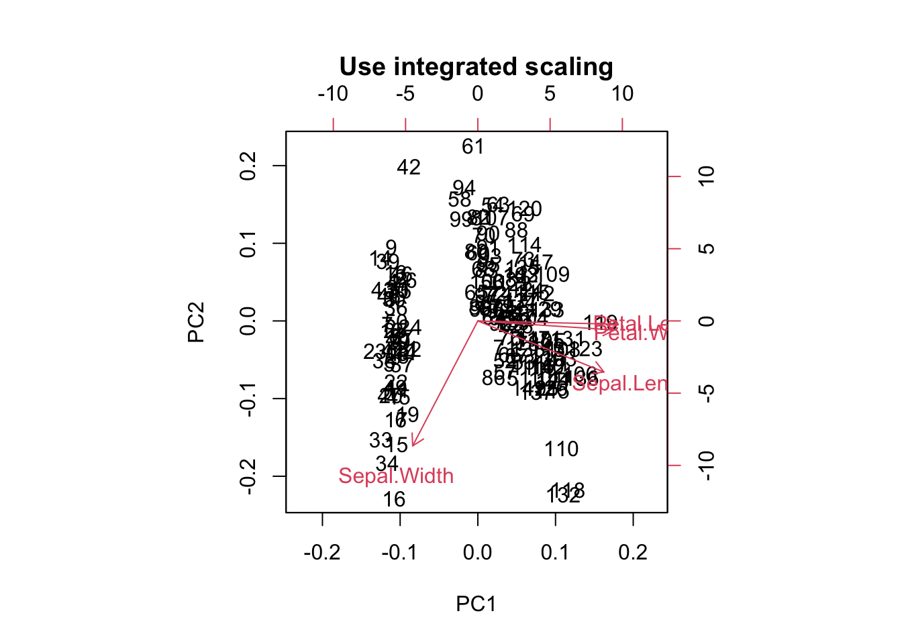
biplot(prcomp(scale(traits), center = FALSE, scale. = FALSE),
main = "Scale explicitly")
biplot(prcomp(traits, center = FALSE, scale. = FALSE),
main = "No scaling at all")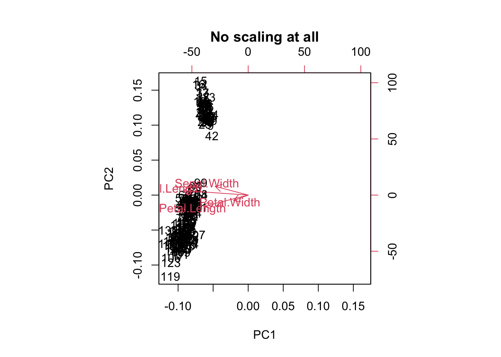
For PCA ordination, scaling matters. Because we are interested in directions of maximal variance, all parameters should be scaled, or the one with the highest values might dominate all others.